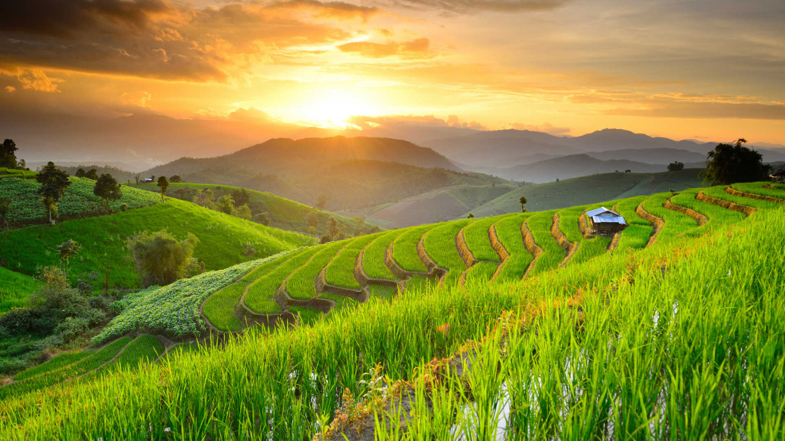
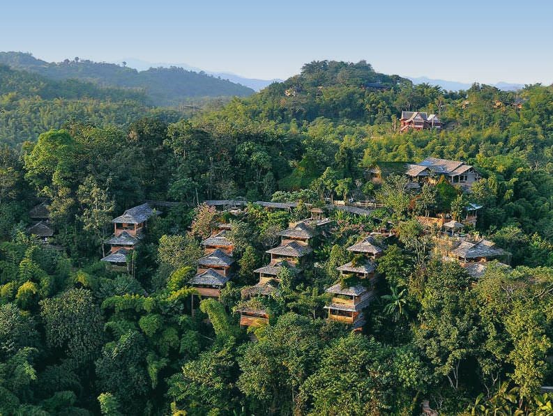
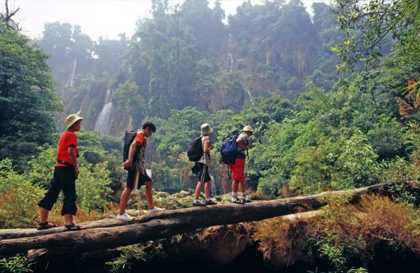

Experience Northern Thailand

Northern Thailand is a place of majestic beauty and diversity that is perfect for both adventure and relaxation. It can be a refreshing retreat from the hustle and bustle of city life. Visitors have a chance to experience a wide range of nature-oriented activities when in this amazing area of Thailand. My experience with this region is based out of Phu Chaisai Mountain Resort, in the Chang Rai Province and the available sightseeing and adventure activities surrounding its lush, natural property.

Phu Chaisai Mountain Resort offers an amazing mountain retreat experience within an abundant, forested grounds. In 2017, it was named by Orbitz as on of eight recommended environmentally friendly hotels in the world and for good reason. This rustic and beautiful resort is immersed in colorful, plush gardens throughout and far from any manmade city structures. The resort offers facilitation for the numerous activies and tours available in the area.

All around the Chang Rai mountainside are activities, tours, and adventures of all types. Tours are available to see the lifestyles of the local hill tribes and the products they make to sell and trade. Other activities are focused on relaxation, such as yoga classes out in nature. For the more adventurous traveler there is mountainside horseback riding and bamboo canoeing among other exciting things.